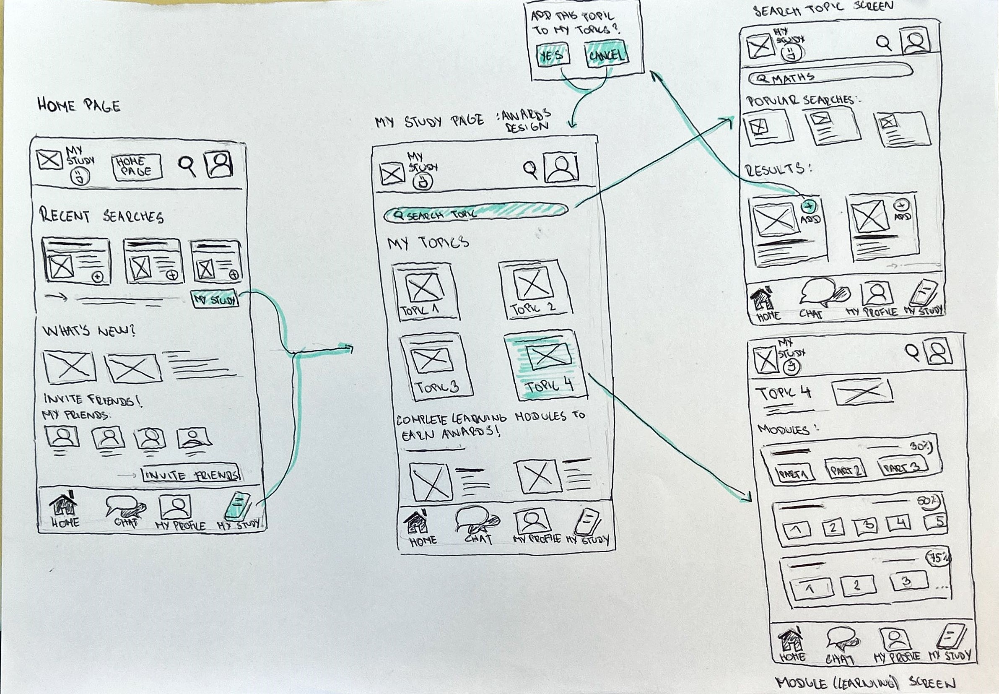
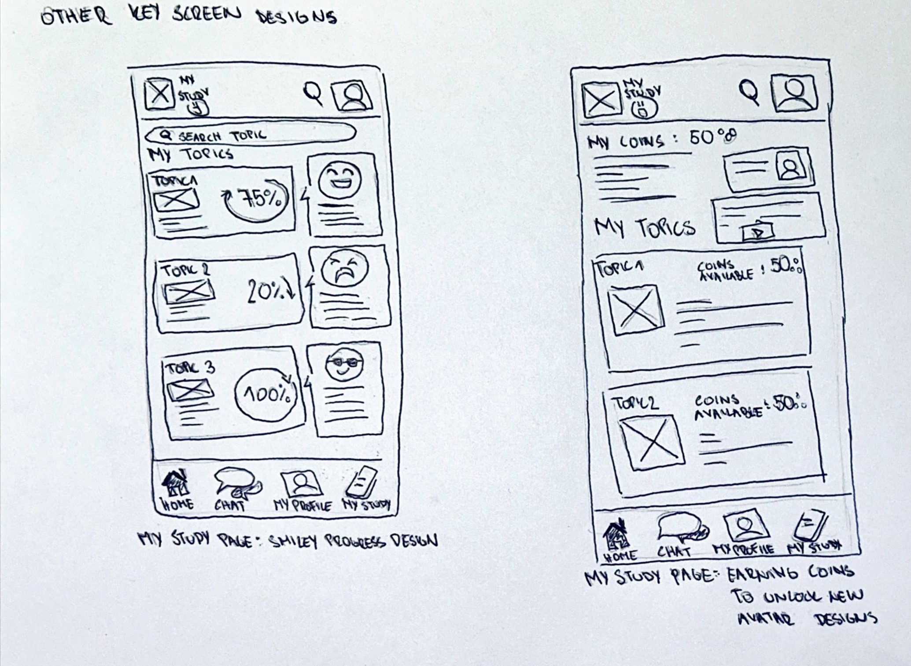

Wireframes
User task
The user task I am designing is setting a goal where user is able to set a new goal they want to achieve
(selecting and adding a new learning topic) and also is able to find and see their learning outcomes, progress and
how close they are to achieve their goal.
Since these are two closely related tasks for the user, I have drawn two user flows to separate them.
User Flows


Wireframes
The second screen is my key screen. Other design of the key screen are on seperate image.
 